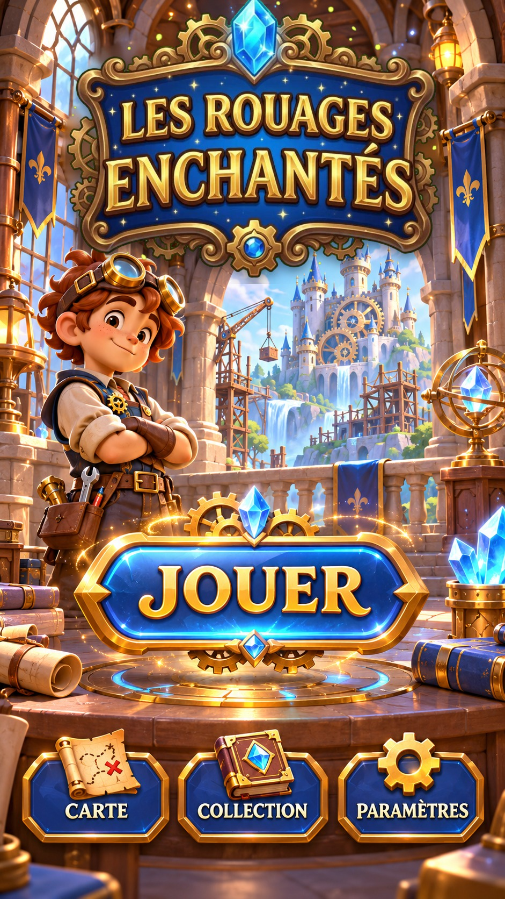

Les Rouages Enchantés
Le royaume s'est arrêté : à vous de remettre les mécanismes en marche. Choisissez un rouage, posez-le sur le bon axe et reliez le moteur à la porte pour qu'elle s'ouvre.
Comment jouer : cliquez sur un rouage en bas de l'écran puis sur un axe, ou faites-le glisser. Moins vous jouez de coups, plus vous gagnez d'étoiles. Les boutons Annuler, Recommencer et Indice vous aident à tout moment.